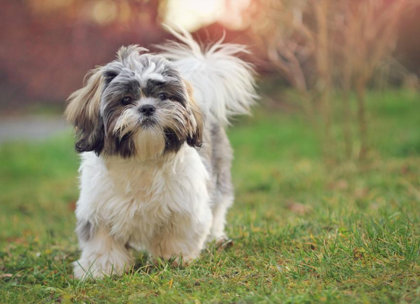
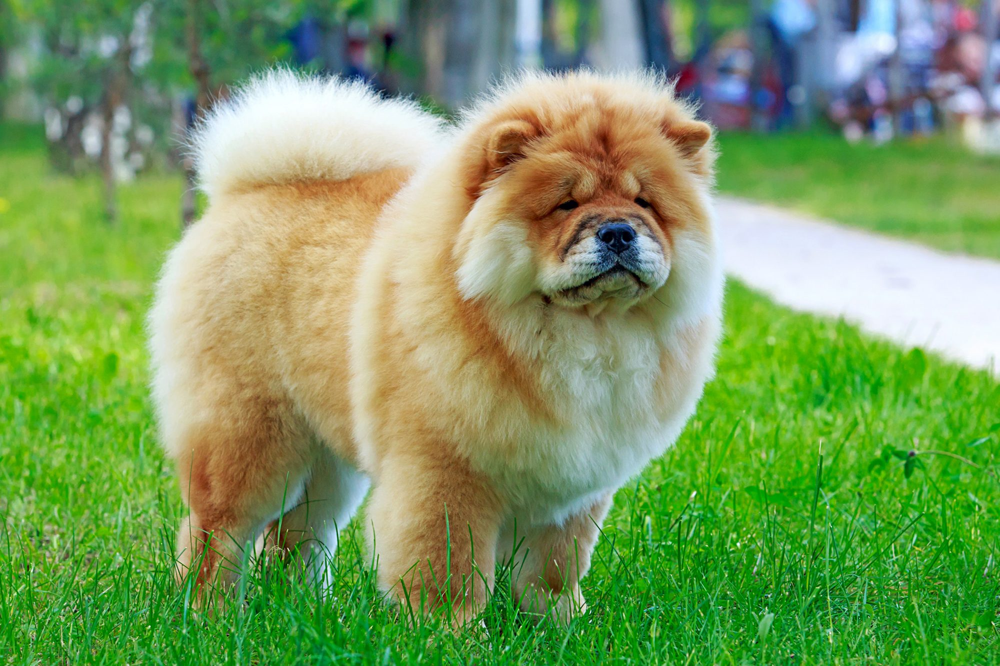

Dog Breedssources |
||
Image |
||
|  | The shih tzu is often slightly longer than tall, with a sturdy body and a good-sized head. The muzzle is quite short, with an undershot bite. The head is rounded and the eyes are quite prominent. The tail is carried gaily curled up over the back. |
|
 |
The Pomeranian is a true "toy" dog, with an ideal height of eight to 11 inches and weight of only three to seven pounds (one to three kilograms). They are often at mature size by seven to 10 months of age. Pomeranians are easily recognized by their luxuriant fluffy double coat and foxy face with alert, prick ears. |
|
|  | Chows are powerful, compactly built dogs standing as high as 20 inches at the shoulder. Their distinctive traits include a lion's-mane ruff around the head and shoulders; a blue-black tongue; deep-set almond eyes that add to a scowling, snobbish expression; and a stiff-legged gait |
|